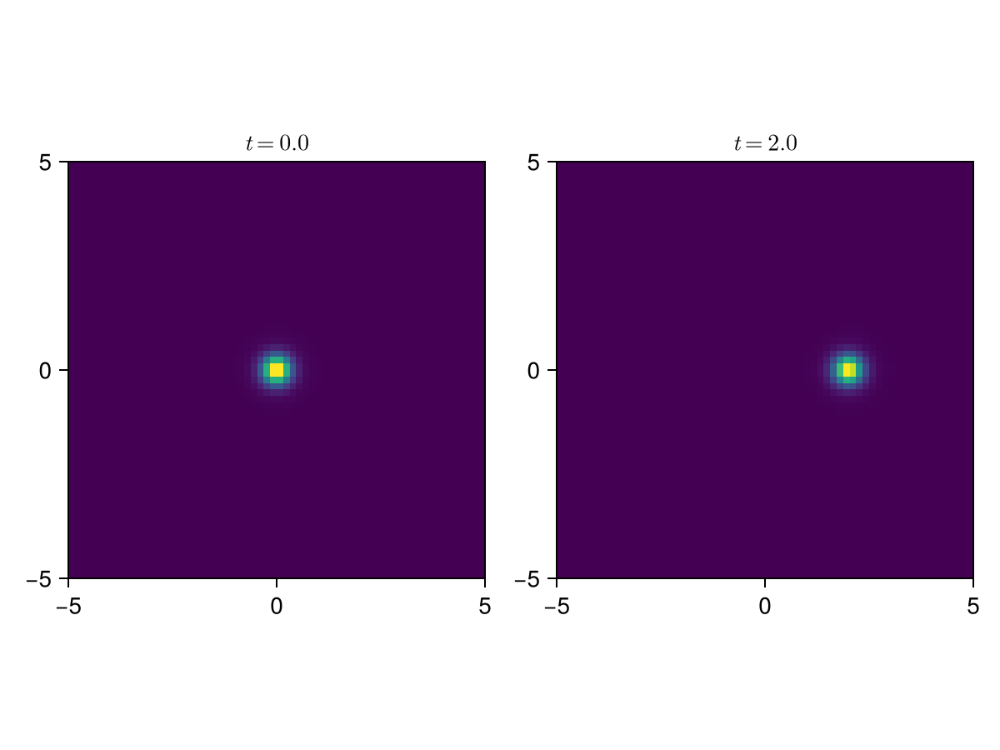

Overview
This page is a brief overview of how to use UltraDark. Other examples go into more detail.
UltraDark is built around UltraDark.AbstractGrids objects that contain coordinates and fields, and keep track of the relations between them. There are two types of grids included with UltraDark. UltraDark.Grids are built around regular Julia Core.Arrays. These are the grids used in most of the examples in this documentation. UltraDark.PencilGrids is built around PencilArrays.PencilArray and PencilFFTs. PencilGrids are useful for taking advantage of MPI parallelism when running in a cluster environment.
Note that there is significant overhead involved in using PencilGrids. It is best to stick to Grids unless you are running jobs accross multiple nodes.
You can define your own subtype of UltraDark.AbstractGrids if you wish to take advantage of other forms of parallelism or change the dynamics of the fields.
Let's start by creating a Grids object.
using UltraDark
const resol = 64
const box_length = 10.0
grids = Grids(box_length, resol);grids is initially empty, as we can see by checking its mass
UltraDark.update_gravitational_potential!(grids) # ensure the density is up to date
UltraDark.mass(grids)0.0Initial conditions are set by modifying the field ψx of grids. Let's use UltraDark.Initialise.add_fdm_soliton! to add a soliton with nonzero velocity to the center of grid.
const mass = 10
const position0 = [0, 0, 0]
const velocity = [1, 0, 0]
const phase = 0
const t0 = 0
UltraDark.Initialise.add_fdm_soliton!(grids, mass, position0, velocity, phase, t0)Now, as expected, the mass on grids is nonzero
UltraDark.update_gravitational_potential!(grids) # ensure the density is up to date
UltraDark.mass(grids)9.999133748767056This does not exactly equal mass because we have used a coarse grid.
Let's also check the location of the soliton.
argmax(grids.ρx)CartesianIndex(32, 32, 32)The indices of the maximum are at half resol in each dimension; this is the center of the box.
After creating a AbstractGrids on which a simulation will happen and adding some matter to it, one must specify how the simulation should be carried out. The most important details are when and where to write output, and when the simulation should end.
const output_times = 0:0.5:2
const output_dir = joinpath(mktempdir(), "output")
output_config = OutputConfig(output_dir, output_times; box = true)See UltraDark.Output.OutputConfig for more details of how to configure the output and UltraDark.Config.SimulationConfig to configure other aspects of the simulation.
Now we are ready to run a simulation by calling simulate!. Running this line will likely take some time, especially if UltraDark.jl has not been precompiled by your Julia installation.
@time simulate!(grids, output_config)[ Info: Reached time 0.5000000000000002
[ Info: Reached time 1.0
[ Info: Reached time 1.5000000000000009
[ Info: Reached time 2.0
4.064064 seconds (40.19 k allocations: 746.612 MiB, 6.08% gc time, 0.90% compilation time)We initialised the soliton with a nonzero velocity. Let's check if the soliton moved during the simulation.
argmax(grids.ρx)CartesianIndex(45, 33, 33)Yes, it did – the maximum is now at a different location.
We can also check this by loading output files from output_dir and plotting them.
using CairoMakie
using LaTeXStrings
using NPZ
fig = Figure()
for (i, t_index) in enumerate([1, length(output_times)])
rho= npzread(joinpath(output_dir, "rho_$(t_index).npy"))
ax = Axis(fig[1, i], title=L"$t = %$(output_times[t_index])$", aspect=DataAspect())
heatmap!(grids.x[:, 1, 1], grids.y[1, :, 1], rho[:, :, Int(resol//2)])
end
fig
After understanding this overview you may want to browse the example notebooks to see more complex simulations and analysis.
Please open an issue if you run into problems or have feature requests.